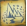

Introdução
Isolado desde de imemoriais eras, o continente do Novo Mundo, é habitado pelas mais únicas criaturas, que separadas das linhagens comuns, evoluíram ao ponto de ter uma indistinguível forma e poder, agora o continente abre suas portas e convida os bravos homens e mulheres que confiarem o suficiente em suas habilidades ou sorte, para enfrentar o desconhecido, em busca das riquezas e glórias que o Novo Mundo lhes guarda.
Pontos Turísticos
Planaltos Coralinos
Situando-se ao centro do Novo Mundo, os Planaltos Coralinos, se caracterizam como uma grande planíca terrestre, mas com uma inconfundível flora marítima, seus famosos corais se estendem por quilometros e criam uma atmosfera e paisagem única, nunca passando desavisada por quem a vê.


Contudo, o local como todo o continente, também detêm algumas criaturas que merecem o devido cuidado, em especial Legiana, uma criatura aérea de grande porte, que pode ser evitada ao se deslocar para um ambiente coberto.
Seliana
Uma nova base construída como quartel-general para investigações em Hoarfrost Reach. É completo com uma variedade de instalações e recursos úteis para rivalizar com os de Astera, todos alimentados pela abundante energia geotérmica da terra.
Algo que os viajantes sempre comentam, e que não poderia ser deixado de fora, é a renomada Chef Grammeowster, que é mundialmente reconhecida por seus incomparáveis pratos.
Seliana também possui sua própria sala de caçadores, que agora pode ser totalmente personalizada a pedido do Cliente. É possível mudar o tema, a mobília, o papel de parede e a decoração de um quarto. Novos móveis podem ser requsitados e entregados mediante pedido, e cada tipo de mobiliário apresenta uma seleção de cores e padrões para escolher. Animais de estimação são aceitos e tem diversas áreas especiais para acomoda-los. Você também pode realizar festas no seu quarto, desde que seu pedido seja feito com antecedencia para a administração.
Floresta Ancestral
A Floresta Ancestral, localizada ao sul do continente, é um vasto terreno, arborifero, o ponto de maior diversidade biologica de todo Novo Mundo, contendo desde pequenas criaturas, até gigantes e ardilozes feras, sendo a mais notável delas o Rathalos, um gigante dragão vermelho.

Astera, também sendo na parcela sul, detêm um inestimável valor histórico, por ser a primeira base humana no continente, feita por seus primeiros colonos, sua população é média, a pequena vila é um bom lugar para comprar os primeiros suprimentos do que deverá ser uma longa jornada pelo continente.
Hospedegem e alimentação
O Novo Mundo também é conhecido pela sua ampla variada alimentícia, sendo baseada em plantas locais, e também evidentemente na carne de caça, o alimento mais comum da região selvagem.

O continente, além das várias loja de suprimentos onde se pode comprar boa comida, por um razoável preço, a dois estabelecimentos que se destacam pela qualidade única de seus pratos servidos, um é a Cantina do Chef, que se situa na zona superior de Astera; enquanto o outro é a já mencionada, a famosa Cantina de Seliana.
Venha conhecer nossa diversidade de receitas, deliciosas e bonitas, todas feitas pelos nossos mais talentosos e fofos mestres de culinária!


Nossos cozinheiros conseguem fazer pratos de todas as variedades possíveis! tanto como saladas, sopas, pães, carnes, peixe, entre outras.
Perigos
Tome cuidado com seus perigos
O novo mundo apesar de ser um lugar lindo e paradisíaco, guarda perigos e mistérios que não podem ser vistos ou descobertos por comuns turistas, apenas por caçadores corajosos que colocam suas vidas em risco por aventura.
| Regiões | Monstros | Recomendações |
|---|---|---|
Floresta Ancestral  |
Anjanath Kushala Daora Rathalos |
recomendavel com cuidado |
Ermo Selvagulha  |
Diablos Diablos Negra Rathian |
recomendavel com cuidado |
| Fenda do ancião |
Bazelgeuse Teostra Lunastra |
não recomendável tenha cuidado |
| Fronteira glacial  |
Barioth Velkhana Banbaro |
recomendavel com cuidado |
Dicas de viagem
Quando for sair em jornada, ou apenas para conhecer o mundo lembre-se de se preparar primeiro! Aqui estão os monstros que podem cruzar seu caminho.